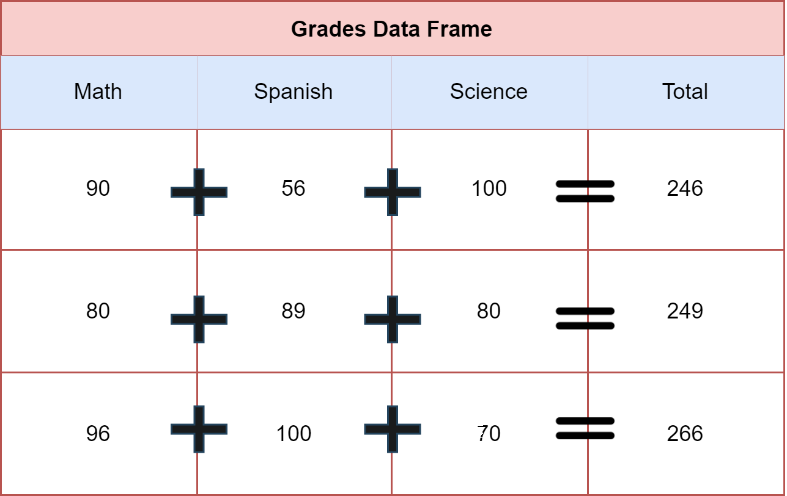

v1 <- c(2,3,4,5)
v2 <- c(5,6,7,8)
v1 + v2[1] 7 9 11 13I mentioned in Chapter 3 some object characteristics. I told you that objects have properties similar to objects in real life.
In programming languages the properties of objects will determine how and what you are able to add, subtract, transform, and merge. Objects have virtual matter!
Vectors are the basic unit in R. They are everywhere in the R environment, but they have specific behaviors. For instance, you could sum vectors:
v1 <- c(2,3,4,5)
v2 <- c(5,6,7,8)
v1 + v2[1] 7 9 11 13We should examine what happened in this example. The first element in V1 was added to the first element in V2.We got the result 7. This means, R is respecting the position of the elements, the first element in one vector will be added to the first element of subsequent vectors.
Elements in a list can also be added because they are after all vectors saved all together inside the same object, like having a shopping bag with several objects:
shoppingExpenses <- list(monday = c(34,56,78),
tuesday = c(56,78,90),
thursday = c(56,32,89))
shoppingExpenses$monday + shoppingExpenses$tuesday[1] 90 134 168When using lists, you need to use the dollar sign $, this is a “pin” that tells R where in the list is the object I need to manipulate. Monday, Tuesday, and Thursday are objects inside my list. In this case, I’m adding my Monday expenses to my Tuesday expenses.
Data frames also have similar properties compare to lists. In data frames you can also use dollar sign $ to declare what column you need to manipulate:
grades <- data.frame(math = c(90,80,96),
spanish = c(56,89,100),
science = c(100,80,70))
grades$math + grades$spanish + grades$science[1] 246 249 266In this example you can tell that I’m using the dollar sign $ to specify which columns I need to add together. Each element is added row-wise and it generated a result. The next figure might help to understand how R adds the values in a data frame:

At this point you might be thinking, what happens when the vectors don’t have the same length?
v1 <- c(1,25,9)
v2 <- c(2,5)
v1 + v2Warning in v1 + v2: longer object length is not a multiple of shorter object
length[1] 3 30 11R gives us a Warning because v1 and v2 don’t contain the same number of elements. This warning is telling that both objects don’t have the same dimensions. When the vectors don’t have the same dimensions, R recycles the operation. Notice that R added 1 + 2 = 3, also added 25 + 5 = 30, but there is not a third number in v2. In this case R came back to the first position and added 9 + 2 = 11.
This behavior in R can induce many times to multiple errors, it is recommended to work always with same length vectors.
The same rules explained in the case of addition apply to subtraction. You can substract in R using the minus sign -:
v1 <- c(56,89,80)
v2 <- c(89,33,88)
v1 - v2[1] -33 56 -8You can multiply in R using asterisk *:
v1 * v2 [1] 4984 2937 7040You can divide in R using slash /:
v1 / v2[1] 0.6292135 2.6969697 0.9090909R can work as a sophisticated calculator, it has all the mathematical functions that you can imagine and more.
You may check more mathematical function by CLICKING HERE